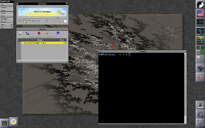

          <br />
          <br />

	  <h1>Themes</h1>

	  <h2>Documentation</h2>
	  
	  <ul>
	    <li><a href="themepacks.html">ThemePacks HOWTO</a></li>
	    <li><a href="theme-HOWTO.html">Theme HOWTO</a> (out of date)</li>
	  </ul>

	  <h2>Links</h2>

	  <ul>
	    <li><a href="http://www.jessanderson.org/wmthemes/">Jess Anderson's Themes for Window Maker</a></li>
	    <li><a href="http://box-look.org/index.php?xcontentmode=7313">Box-Look.org Window Maker Themes</a></li>
	    <li><a href="http://www.gozer.org/window_maker/themes/">Gozer.org Window Maker Themes</a></li>
	    <li><a href="http://lonelymachines.org/windowmaker-themes/">LonelyMachines Window Maker Themes</a></li>
	    <li><a href="http://jmeyer.us/windowmaker_themes/">James Meyer's theme collection</a></li>
	    <li><a href="http://www.cs.mun.ca/~gstarkes/wmaker/themes/">Tower's Window Maker Themes</a></li>
	  </ul>
	  

          <h2>Themes Gallery</h2>

          <div class="screenshot">
            <a href="screenshots/NeXT-Retro.png"></a><br />
            <b><a href="Themes/NeXT-Retro.tar.gz">NeXT-Retro</a></b> by Martin Dietze (<a href="Themes/NeXT-Retro_README.txt">README</a>, <a href="Themes/NeXT-Retro_dockapps.txt">dockapps information</a>) <p />
          </div>
